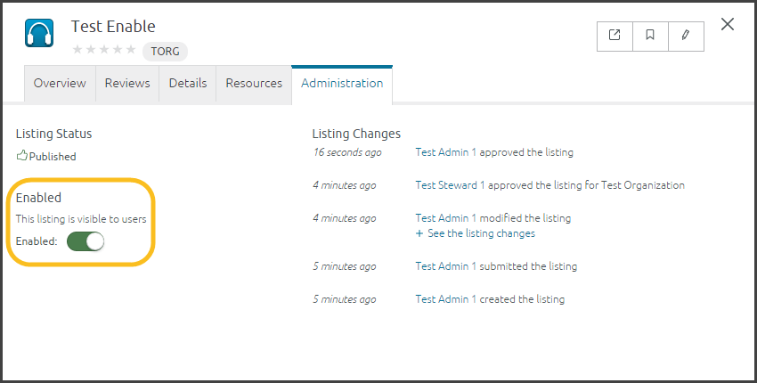

Org Steward: Approve/Return Listings
Before users can find and bookmark listings from Center, an org steward and Center steward must approve the listings. The following section describes the org steward approval process:
- Click the Needs action filter. To do this, click the drop-down Main Menu and select Listing Management. Click Needs action from the State panel on the left:

- Listings that need approval appear. Click a listing to open its Detailed View.
- After reviewing the listing, click the Administration tab.
- On the left-side, click Approve or Return to Owner:

- If you approve the listing, it moves into the Center steward's queue and you're done. After the Center steward approves the listing, the owner or Center steward can enable or disable it.
- If you click Return to Owner, type instructions explaining how the user should update the listing before submitting it. Then, click Return to Owner. The listing will move out of your queue until the owner resubmits it.
Org Enabled/Disable
After a Center steward approves a listing, an org steward can Enable or Disable it:

To enable or disable a listing:
- Open the listing's Detailed View.
- Click the Administration tab and select Enable or Disable:
- Enable a listing to make it available for bookmarking and searching.
- Disable a listing to hide it from search results.
Related Info